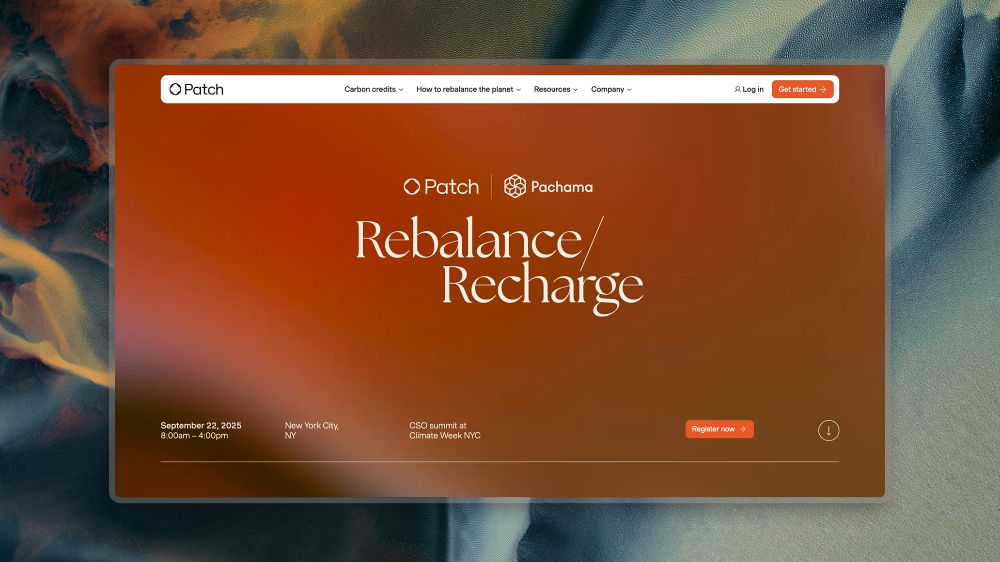
The brief
New York Climate Week is one of the world's largest climate gatherings outside of COP. Patch had always shown up — but in 2025, we wanted to do something more intentional. The goal: bring together enterprise Chief Sustainability Officers for a full-day event during one of the busiest, noisiest weeks in the climate calendar. CSOs are among the hardest audiences to reach. Their time is precious, and everyone is competing for it.
Our Revenue Marketing Lead and I were tasked with making it happen.
Credits
Revenue marketing: Stephanie Ross
Content: Matt Klassen and Patch SMEs
Photography: Anita Ng (NYCW); Ashley Thompson (SFCW)
Brand design: Elena Gil-Chang
Developing a sub-brand identity
I proposed creating a standalone event brand — distinct from Patch, but unmistakably connected to it — that could grow into a series across climate weeks in New York, San Francisco, and London. The name Rebalance/Recharge tied directly to Patch's mission (Rebalance the Planet) while evoking the feeling we wanted to create: an exclusive retreat, a moment to reflect and get energized before a packed week of events.
The identity needed to feel distinct enough from our main brand to function as a "middle ground" for a co-sponsor, stand out in a crowded field, and come together in two days. I landed on a typeface that felt elegant and poetic without losing executive credibility, and used Patch's orange accent to build a dynamic gradient that carried through the website, speaker backdrop, signage, and promotional materials.
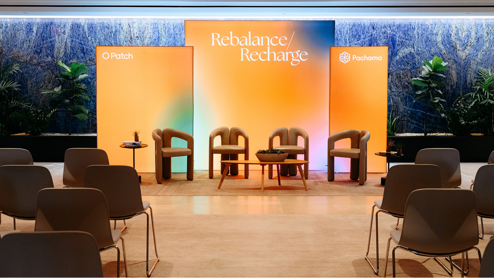
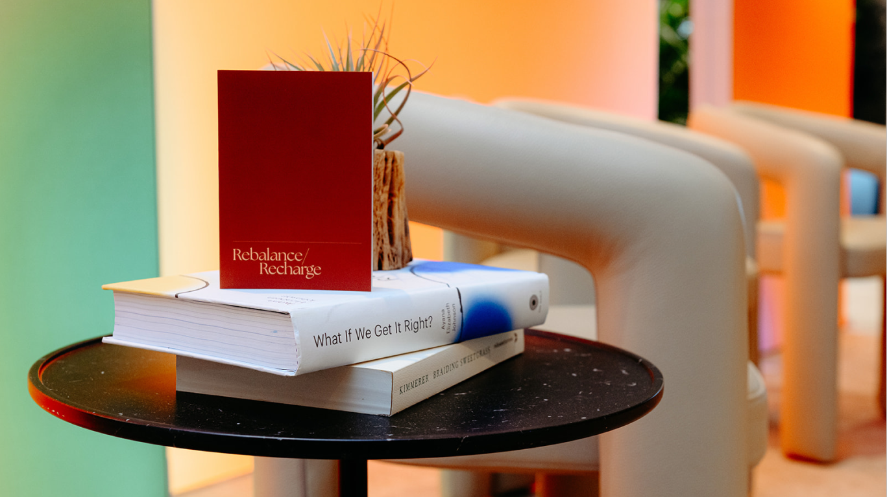
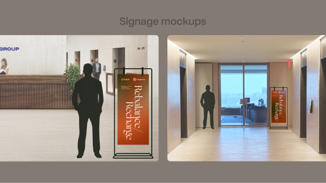
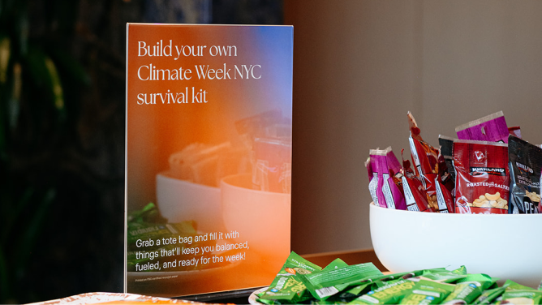
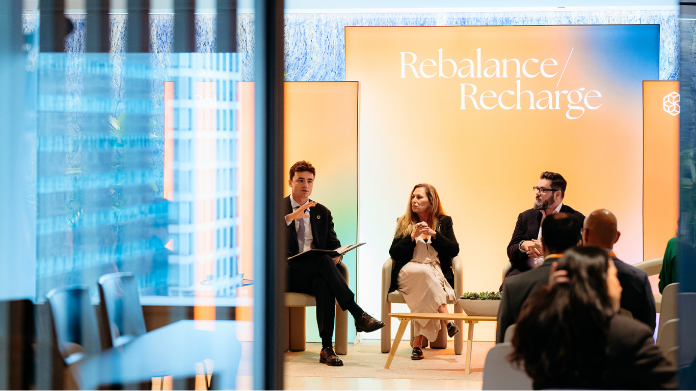
Execution
With a tight budget and an aggressive timeline, I handled the physical production end-to-end: scouting and measuring venues, designing signage, and solving problems like a speaker backdrop that needed to look polished and be reusable — solved with rented lightbox frames. It was scrappy in the best sense: every decision was made with both aesthetics and constraints in mind.
The event drew the target audience, generated strong feedback, and opened doors with CSOs we hadn't previously been able to reach.
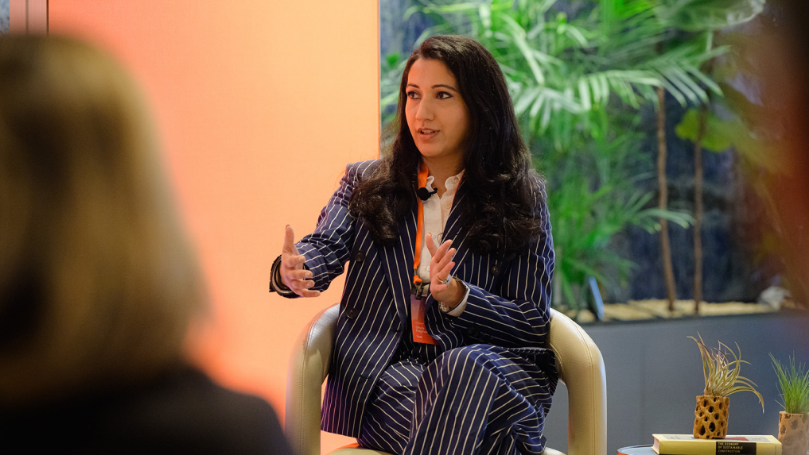
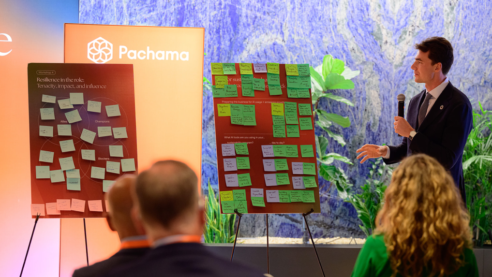
Going beyond New York Climate Week
At San Francisco Climate Week, we returned with the same brand framework (going with just “Rebalance” for simplicity and stronger Patch brand ties), a refreshed color scheme to accommodate a new co-sponsor (Salesforce), and an even more prominent speaker lineup.
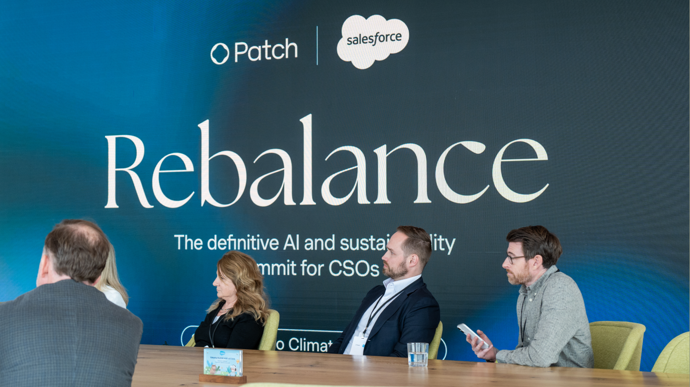
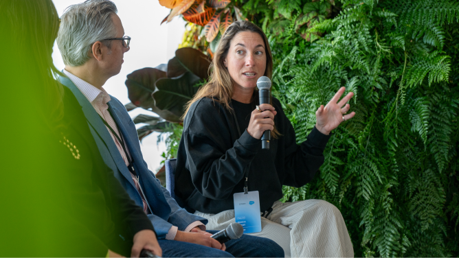
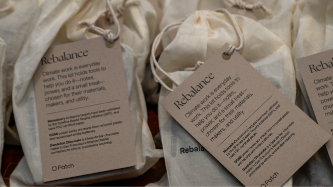
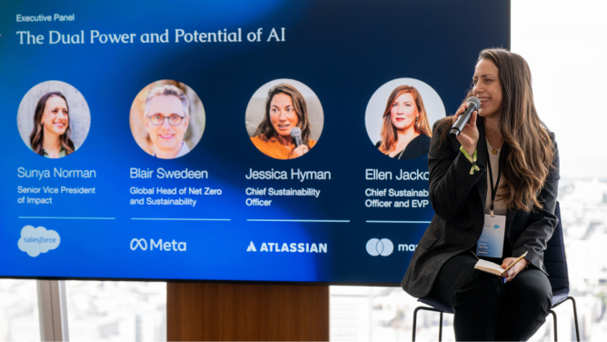